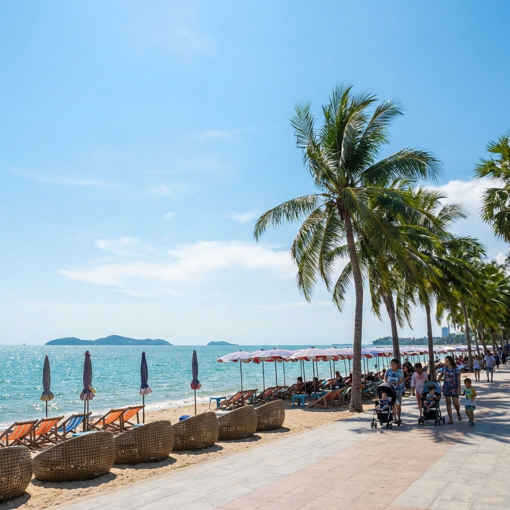
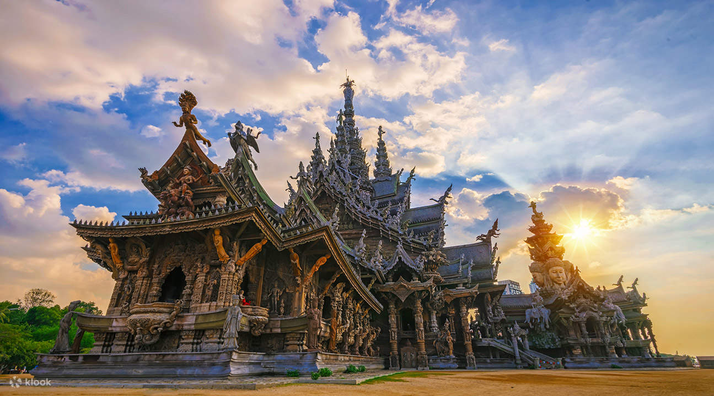
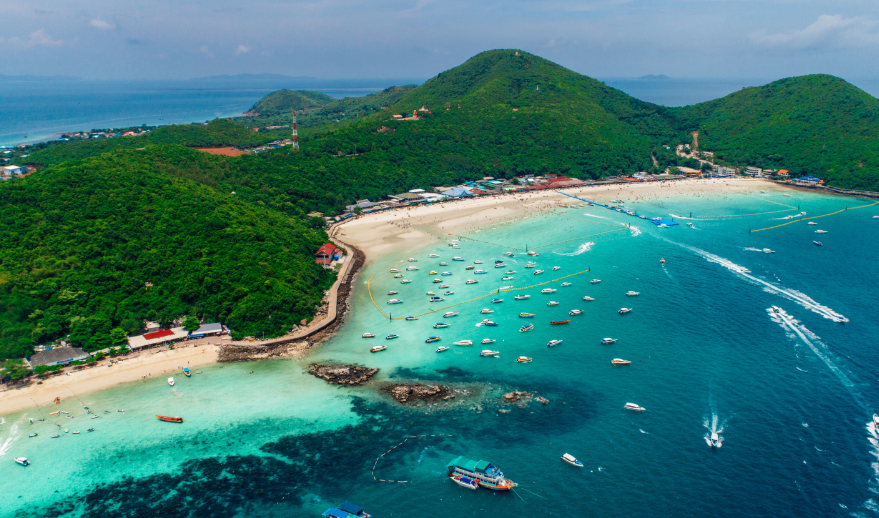
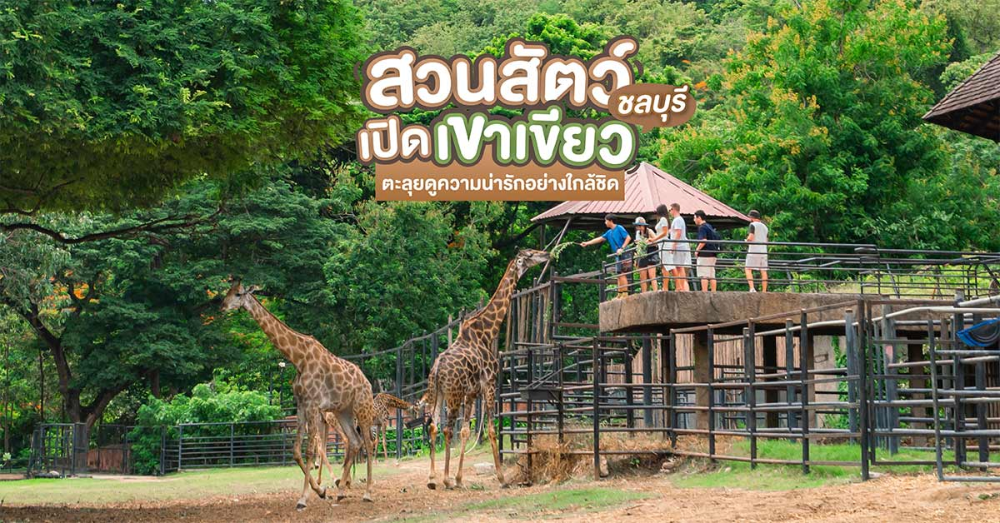

หาดบางแสนเป็นชายหาดที่มีชื่อเสียงและอยู่ใกล้กรุงเทพฯ มากที่สุดแห่งหนึ่ง บรรยากาศร่มรื่นด้วยทิวมะพร้าวและร้านอาหารทะเลมากมาย เหมาะแก่การพักผ่อน

ปราสาทไม้แกะสลักที่ใหญ่ที่สุดในโลก ตั้งอยู่ที่พัทยา แสดงถึงความวิจิตรบรรจงของศิลปะไทยและปรัชญาทางศาสนา

ปน้ำทะเลใส หาดทรายสวย เช่น หาดตาแหวน หาดเทียน เหมาะกับดำน้ำและพักผ่อน

แหล่งท่องเที่ยวเชิงอนุรักษ์ เหมาะสำหรับครอบครัวและการศึกษา
